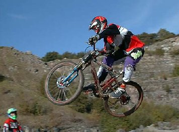
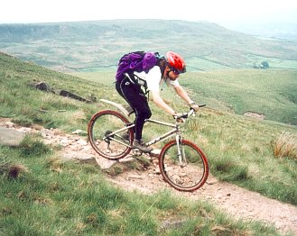
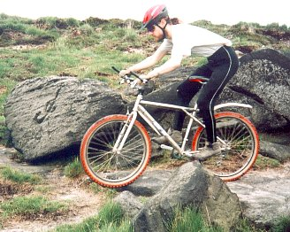
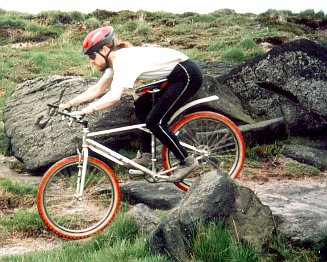
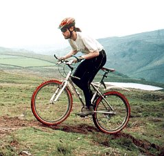
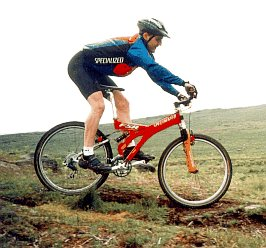
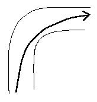
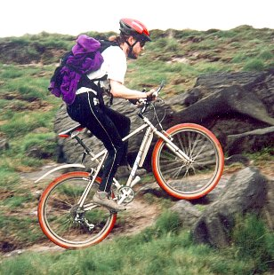

 rad dude in action (thanks to Wheelpro for photo) It's easy to be intimidated by media images of mountain biking. The ads in mountain bike magazines show radical dudes with grimaces three feet in the air, or blasting down unbelievably steep hills. The Mountain Dew and Pepsi Max ads show the same radical dudes doing tricks and stunts, presumably powered by excess caffeine. You think of yourself, incapable of the smallest bunny hop, and you wonder: "Am I worthy?"
The answer is definitely yes. Mountain biking is what you make of it, it's what makes you feel good. For some people that's getting big air on the lip of a bombhole, but it doesn't have to be that way. For some it's getting away from the traffic and the noise with a gentle ride in the local forest. For some it's working your way up a long slope to get the view from the top of the moors.
 anyone can learn to do this However, even if you're not the showoff type, off-road skills are still useful. Forest tracks often have fallen logs across them. Those long slopes up the moors are often studded with rocks that can bring you to a dead stop. Learning to negotiate these obstacles can help keep you on your wheels, so you don't have to get off and walk over all obstacles.
This article is most useful for people who are relatively new to the sport and who are perhaps a bit nervous about mountain biking. The aim is to give you some ideas and help you to gain confidence off-road.
The first thing you need to know is that you should never allow yourself to be pressured. Don't ride with people who put you down because you walk over obstacles that they ride over. If you try things that you aren't ready for, you're more likely to crash and hurt yourself. Try to find a friend who will wait for you, or even better, will show you how to do it and will let you try it yourself a few times. If you don't have friends like this, try going out by yourself, so you have the time you need. However, you should be reasonably conservative when you're by yourself, because if you crash badly there won't be anyone around to go for help. You should also be more conservative towards the end of a long ride. Sometimes maneuvers take a fair bit of concentration and effort, and if you're tired both mental and physical abilities suffer.
"When in doubt, chicken out."
From the video Pulp TractionSometimes you may need several goes before you get up the nerve to try a technique. When I first got my mountain bike, I decided to try going down a dropoff on my favorite trail. It wasn't a big one, maybe a foot high, but it looked pretty big from where I was sitting in the saddle. I rolled up to it a few times, braking to a stop just on the edge, before I finally had the nerve to let the bike go over. It went OK, and I hauled the bike back up it to do it again. The next time I came to that spot in the trail I just did it, although cautiously.
You build up confidence slowly. If you do something once, then you know that you are capable of doing that maneuver. When you come up to a similar obstacle, or even one slightly more difficult, you tell yourself that you can handle this, you've done it before. You remember what you did before, and do it the same way. Each success gives you additional confidence.
The way to handle most of what you'll find on the trail is to let the bike roll over it. Stay flexible, keep your elbows slightly bent, try to avoid tensing up your shoulders, don't grab your handlebars with a death grip. Your body absorbs shock better when it's got some give in it. If you keep yourself rigid, your body will get thrown around by all the little bumps you go over, and you'll have less control over the bike. Let the bike move underneath you. Keep your weight over the pedals, and this will let you get your position right for climbing, descending, and cornering.
One thing that can really help is to focus on where you want to go. For example, if there's a rock coming up on the trail, don't stare at the rock. If you do, you're more likely to hit it. This is a phenomena called "target fixation", and it's found in many different situations. For example, skydivers are told to focus on big open areas when they are selecting a place to land. If they concentrate on the lone tree in the middle of the field, they're likely to end up in it. So once you see the rock, note where it is, but then focus your attention on the smooth bit of trail beside the rock. And if you're on a trail next to a steep dropoff, concentrate on the trail, not the dropoff. If you let the dropoff draw your attention away from the trail, you could find yourself falling down it.
Here are some suggestions for specific situations.
Here's how to go over a dropoff. Roll up to the edge, going reasonably slowly. Stand up, bending your elbows and knees, keeping yourself reasonably loose. When the front of the bike goes over the dropoff, stretch your upper body forward and down to let your hands stay on the handlebars. The idea is to let the bike move underneath you, while your center of gravity stays more or less the same. When the back of the bike goes off the dropoff, let your upper body contract again. Keep your knees a bit bent and ready to absorb impact through all of this. Your feet will move most when the back of the bike goes over the dropoff, but as long as you use your legs as shock absorbers they will be able to handle it.
|  |  |
Matt shows us the first phase in the photos above. If he had stayed rigid while the front wheel went over the dropoff, he'd be much further forward in the second photo, putting too much weight on the front wheel and risking an endo. Instead, he stretches out, bending the knees slightly. This lets his his hands go down with the front of the bike, while keeping his weight reasonably far back. The bike has pivoted underneath him, clearly seen by the position of the saddle.Shaun Murray takes a more daring approach involving a wheelie (more on that below). His solution allows him to more easily maintain speed. "I have a different technique for drop offs which works fine if the run out is clear. I wheelie off the drop off and land flat. It works best with a bit of speed so the front wheel doesn't land before the back has cleared the lip. Front suspension works for you with this if you compress the forks before the lip and move your weight back. Maybe not one for the timid but I find it less risky in practice. Strangely it's less risky with more speed if there is space. No run out or you weren't paying attention and now you have a drop off in front of you but no speed, then use the technique above as slowly as possible."
If you're going up a small (up to maybe a couple of foot high) steep slope, like coming up a bank after a stream crossing, use the first dropoff technique in reverse. You need to have a fair bit of momentum to make it up. Stand up and put all the weight on the pedals (not your hands), so that when the front wheel hits the slope it goes up it rather than stopping. Let your arms bend as the front wheel goes up the slope, and when the back wheel goes up, straighten your arms as the bike levels out, and let your legs bend a little to let the back wheel go up. If you're not going very fast you may have to pedal while you're doing this to get the back wheel up. It helps if can arrange to have a foot at the top of the stroke, about to go down, as you approach the slope.
Getting up hills is a matter of strength and concentration. You must look very carefully and find the smoothest line up. You sometimes have to work very hard with balance and steering to get the bike to follow that line. You need to keep the pedal stroke reasonably smooth so you don't lose traction. Try to pull back when you're at the bottom of the stroke to keep the pressure on the pedals. Don't go all out to get up the slope. Hold some in reserve in case you need a burst of strength to get a steeper bit or over a rock or log.
 Matt stays slightly crouched to keep the pedals going smoothly For a very steep bit, you'll want to apply more pressure to the pedals than you can get sitting in the normal position. Sometimes, if you can get enough traction, you can stand up to pedal, and this will give you the power you need to get up. You should aim to apply pressure reasonably evenly around the pedal stroke. If you put all your effort into the downstroke, you can lose traction easily while the cranks are horizontal (when you're applying lots of power), and then the bike can stall if it comes to a small bump when the cranks are vertical. The method I've found to smoothing out the pedal stroke is to remain slightly crouched while standing up: don't have your leg fully extended when you're at the bottom of the stroke. Then you can pull back more easily at the bottom of the stroke, and push forward at the top. If you do this correctly, it kind of feels like you're running in slow motion.
If there isn't enough traction to stand up, I've found that moving my body forward to the front part of the saddle helps. I don't have all my weight on the saddle; I'm partially standing. This allows me to put part of my weight on the pedals, while still keeping some on the saddle, which help to keep the back wheel from slipping. This also puts me automatically into the partially crouched state that helps keep the pedal stroke smooth.
 Shaun keeps his weight well back To go down hills, stand up with your knees bent. If the slope is steep you'll want to put your weight back somewhat. The idea is to keep the weight on top of the pedals rather than forward of the pedals, since you're more likely to fall forward (endo) if your weight is forward. If it's really steep, you'll have to put your bum behind the saddle. This comes naturally for me, it's just a consequence of trying to keep your weight above the bike rather than hanging off the front end of it.
For speed control use both brakes, but go very lightly on the front one, as it's very easy to put too much pressure on it. This upsets your balance, throwing you over the handlebars. The best speed depends on the conditions. You should keep the bike going slowly enough that it's under control at all times so you'll be able to slow down for the turns and stop to avoid hitting large obstacles (like riding buddies who have crashed!). The only exception to this is when you can see the entire downhill (and enough of an upslope on the other side to slow you down), and you can see clearly that there is nothing that would cause you any problems. Then you can let loose the brakes and not worry about the fact that you'll be going too fast to stop.
While it is possible to go much too fast on downhills, sometimes going too slowly can be a problem too. If you have a bit of forward momentum, it can carry you through some rough patches, while if you were just going at a crawl, you can end up stopped dead. So, for example, if you see a small bump (rocks or roots) coming up and you're going very slowly, you should let go the brakes a bit before you go over the bump, and then slow down again afterwards. If it's a bigger bump you'll have to lift the front wheel (do a little wheelie). If you're going reasonably fast it's probably easier to bunny hop (though, as I mentioned, I haven't really gotten this down).
The key to making a turn is to brake before you enter the turn and lean the bike in the direction of the turn. Braking before you get to the turn gets the bike down the a speed where you can safely make the turn, and then when you're making the turn you're putting your effort into guiding the bike correctly through the turn, not fighting for control using the brakes. Even going downhill, you need to put a fair bit of weight on the front wheel to make it bite in. If the turn has a banked outside edge, you can benefit from using this to make your turn. It will give your tires a better grip, since the banked bit will be more perpendicular to your tires than a flat bit of ground.
It is important to lean the bike in the direction of the turn. This allows the tires to dig into the trail better, providing better sideways traction. To most people this comes naturally, so you don't need to worry too much about it. It can help to position your pedals so that the pedal on the outside of the turn is down and the inside pedal is up, and the inside knee is pointed in the direction you're turning. Partly, this is done to lift the inside pedal (which is being leaned down) to avoid hitting it on rocks, roots, the edge of the trail, whatever. However, the main reason to do this it helps you to lean better. I'm not exactly sure how this works, but to me it feels like the effort of pointing the knee naturally pulls my body into the correct lean.
If the track you're on is wide and reasonably smooth (so you can take any line you want) you can use a roadie technique to "round off" the corner, which allows you to take the corner faster. The idea is shown in the diagram to the right, representing a right turn in the trail. The edges of the trail are shown as thin lines, and the line of travel followed by the bike is shown as a thick line. Notice that the line followed by the bike is a much smoother curve than that edges of the trail. A bike that follows this curve will be making a less extreme turn than someone who follows either the inside or outside line of the trail, meaning that the sidewards forces on the tires will be less extreme. This means that you can go faster before you start to slide. Obviously, don't use this technique when there are riders next to you!
Some people like to skid the rear wheel to go around sharp corners. I don't approve of this technique, or skidding at any time, because it causes trail damage. You should aim to keep your tires rolling whenever they are moving over the ground.
By wheelie, I don't mean getting the bike up on its rear wheel and then riding down the trail like this. I mean that you lift up the front wheel very briefly, and it comes back down almost immediately. The point of the wheelie is to get your front wheel over an obstacle. You don't want your front wheel to stop dead, since then you're likely to go over the handlebars. Once the wheelie has gotten your front wheel over, the traction you get from pedaling is usually sufficient to get the back wheel over. Even if this doesn't work, it's no big deal. If your back wheel stops dead, you stop, but you stay upright and on the bike. You usually have a moment while you're stopped and still balanced. You can use this time to get one foot off the pedal and down to the ground so you don't fall.
Here's how you do your basic wheelie. It requires careful timing. Stand up with legs bent, with your strong leg near the top of the stroke, ready to push down. To lift the wheel up, push down with your foot and pull up on the handlebars at the same time. I find that this works best for me when my hands are on the bar ends. The front wheel should lift up. I can get it up to about a foot high doing this. The front wheel then lands a bit further on, hopefully on the other side of or on top of the trail obstacle.
 Matt does a wheelie to get his front wheel up a step There are lots of uses for the basic wheelie. First, getting over logs. You roll up to the log and do the wheelie to get your front wheel on top of or on the other side of the log. Once the front wheel has cleared the log, you need to try to get the back wheel over. There are several ways you can do this. One is to put less weight on the rear wheel to help it get over the log. To do this you can move your weight slightly forward (more on the handlebars), or you can try to pull up on the pedals a bit. Another thing that can help is to keep pedalling, to allow the traction of the rear wheel to help the bike over.
Going up a step (up to maybe a bit over a foot high) is similar. Use the wheelie to get the wheel onto the top of the step, and move your weight forward and keep pedaling to get the rear wheel over.
There are many other uses for wheelies. Here are a couple of examples I found during a weekend's riding in Yorkshire. Say there's a narrow gully, and you think there's some chance that your front wheel might get stuck in it. Do a wheelie to get the front wheel over it. Another example: you're coming up to a dropoff, and there's a smallish puddle of unknown depth on the other side. My usual dropoff method (the first one described above) puts a fair bit of weight on the front wheel as you go down, and if the front wheel gets stuck in the puddle, it's very easy to go over the bars. So I used Shaun's dropoff method, doing a wheelie just before going off the dropoff, to make sure my front wheel was clear of the puddle. Then my back wheel got stuck in the puddle, and I had to put my foot down. One of my riding companions, a very experienced road rider who is new to MTBing, used the first technique, ended up with the the front wheel stuck in the puddle, and went over the bars.
More bike articlesInevitably it happens. Something goes wrong. The bike slips out from underneath you on a slippery downhill, a root shoves your wheel to the side and you can't recover, the rock catches your front wheel and you're flying over the bars. What do you do now? Many times there's no time to think, but if you have any time to do anything, this is what you need to do: nothing. Go limp. Let your body fall on whatever it's going to fall on, and then roll to distribute the impact over different parts of your body and over time. The more rolls the better. Think of yourself putting on a show for anyone who's watching: you get more drama out of a bunch of rolls than a simple plop.
There are some cases where you don't want to roll. Obviously, if you're about to go over a steep cliff, you need to put everything into stopping yourself. A broken bone or sprain or two is nothing compared to a long drop onto sharp rocks.
If you seem to be heading forward in a more or less upright position it can help to try to hit the ground running, but be prepared to roll if this doesn't work. Don't try to land on your feet and then just stand there. There is often too much momentum for this to work, and you'll fall anyway.
But for most situations, you just want to roll with it. Going limp and letting you body get on with rolling, with the odd bit of sliding thrown in for good measure, many seem counterintuitive. Many people automatically try to stop themselves by holding out their hands. Don't do this, you'll just risk breaking your wrists. In fact many attempts to brace yourself can result in broken bones or torn ligaments. You end up with less serious injuries if you roll. I've crashed lots of times, but the worst I've ended up with is scrapes and bruises. Not to say that worse won't happen, but you minimise your chances of serious injury if you don't resist.
{kind=link}